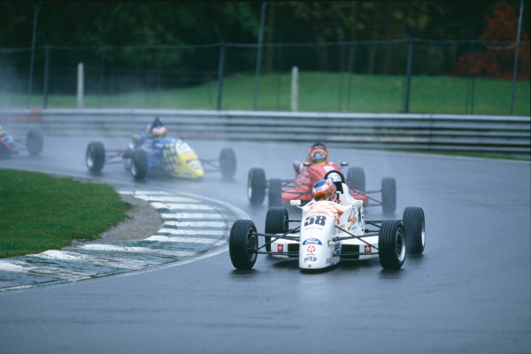
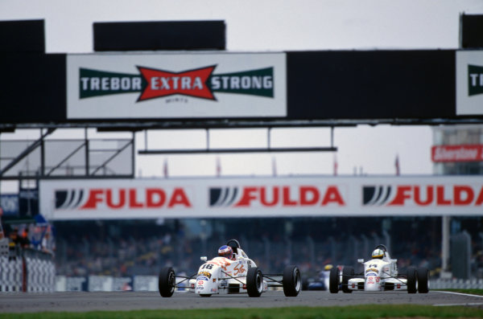
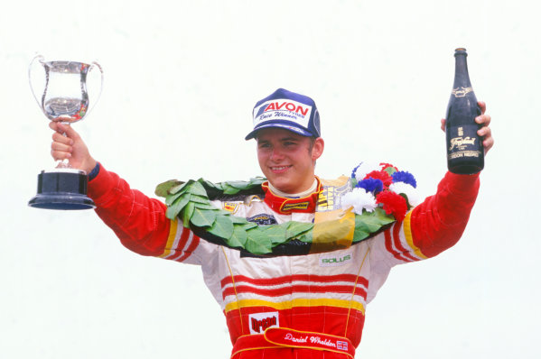

BUTTON, NO ANO DA MYGATE

Piloto estreia com título e marca francesa impõe-se às inglesas. Notória diminuição dos grids denota enfraquecimento da categoria a nível intemacionaL
David Phillips
Os chassis franceses da Mygale dominaram praticamente todos os eventos por toda a Europa, onde foram disputados vários campeonatos de Fórmula Ford. A Inglaterra, berço da modalidade, não foi exceção, pois os monopostos construídos por Bertrand Decoster permitiram ao britânico Jenson Button conquistar a vitória final, depois de subir ao topo do pódio seis vezes em 15 confrontos. Um sucesso impressionante, considerando que esta foi a primeira temporada de Button nos carros, depois de também ter se destacado no karting mundial.
Uma luta dramática até o fim
Para conquistar o título, Button não teve uma tarefa fácil ao volante do carro preparado pela Haywood, já que seu compatriota Derek Hayes foi um adversário duro, chegando até a liderar a competição quando Button cometeu o erro de ultrapassar sob bandeiras amarelas e foi desclassificado em uma prova realizada em Brands Hatch. Esse foi o único momento ruim para o piloto assistido pelo experiente Puddy, pois, de modo geral, a consistência de resultados foi sua maior arma... até a disputa final na última prova. Com tudo em aberto, a primeira das duas corridas disputadas em Silverstone foi absolutamente dramática, já que Button e Hayes acabaram colidindo na penúltima volta, deixando para Button a conquista dos pontos necessários que lhe permitiram celebrar o campeonato na segunda corrida. Além de Hayes, outro piloto que se destacou foi Daniel Wheldon, pois ele pilotou o Van Diemen oficial com as cores habituais da Duckhams. Um carro que desta vez não venceu, embora tenha chegado muito perto da vitória várias vezes. Esportivamente, este também não foi um grande ano para a Fórmula Ford britânica, que teve uma queda muito significativa no número de participantes em relação às temporadas anteriores.

Fórmula Ford portuguesa na reta final
Após um hiato de alguns anos, a Fórmula Ford em Portugal foi reiniciada em 1985, após terem sido disputados três campeonatos nos anos de 1970, 71 e 72 (todos vencidos por Ernesto Neves). A segunda fase da Fórmula Ford em Portugal chegará ao fim no final da temporada de 1998. A indefinição em relação ao Autódromo Fernanda Pires da Silva (Estoril) e a imagem cansada e um tanto desatualizada da categoria (devido à pouca evolução técnica) foram os motivos que levaram a Ford Lusitana a tomar essa decisão, o que empobrecerá ainda mais o cenário do automobilismo português. No entanto, a temporada de 1998 mostrou-se altamente competitiva e, após a disputa de cinco das seis etapas do campeonato, sete pilotos ainda tinham chances matemáticas de se tornarem campeões. No entanto, três deles, Ricardo Megre, Pedro Meireles e Pedro Salvador, eram considerados favoritos.

| Position | Driver | Team | Car | Points |
| 1. | Jenson Button | Haywood Racing | Mygale SJ98 |
133 |
| 2. | Derek Hayes | Haywood Racing | Mygale |
118 |
| 3. | Dan Wheldon | Duckhams | Van Diemen |
104 |
| 4. | Nicolas Kiesa | ADR Motorsport | Van Diemen |
104 |
| 5. | Marcos Ambrose | Duckhams | Van Diemen |
96 |
| 6. | Craig Murray | MGR | Van Diemen |
72 |
| 7. | Tom Sisley | ADR | Van Diemen |
70 |
| 8. | Barry Horne | Maxtrac | Van Diemen |
46 |
| 9. | Robert Collard | Swift | Van Diemen |
41 |
| 10. | Mark McKenna | Haywood | Mygale |
27 |